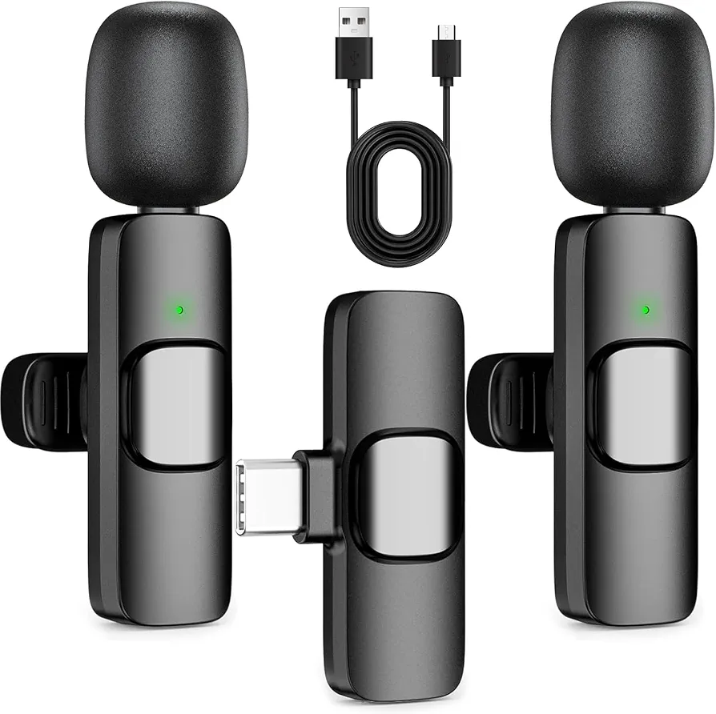

Best Automotive in Faisalabad: Practical Shopping Guide

Faisalabad is a key hub for automotive and vehicle-related products, offering a wide range of options for buyers looking to purchase reliable and practical vehicles. This guide focuses on the best automotive to buy in Faisalabad, helping shoppers navigate the local market with confidence. While the category includes items like motorcycle phone holders, LED strips, and microphones, these are not typical automotive vehicles. Instead, they represent accessories and related products that may accompany automotive purchases. The guide highlights practical considerations such as delivery timelines, return policies, and payment options, ensuring buyers make informed decisions. Understanding the scope of available items and their relevance to actual automotive needs is essential for a successful shopping experience in Faisalabad.
Quick buying check: Match the actual item to your task, check its measurements or compatibility, and compare the full delivered price. Read the listing and policies before you order. The examples below are catalog evidence, not hands-on test results.
Key benefits of choosing Automotive carefully
- Better fit for your task: select the specification or design your situation needs.
- Clearer budget: compare the item, delivery and any required extras together.
- Fewer avoidable returns: resolve missing measurements and compatibility questions before ordering.
- More useful ownership: check how the item will be stored, cleaned and used.
Selection criteria and matching the actual task for Automotive
Selection criteria should align with the specific needs of the buyer. Consider factors like fuel efficiency, maintenance costs, and reliability when choosing an automotive. For daily use, prioritize comfort and safety features. Check if the vehicle meets local road conditions and climate. Ensure it fits the family's size and lifestyle. Match the vehicle's purpose with its capabilities to avoid unnecessary expenses. Focus on practicality over trends or brand reputation. Verify that the model is available in Faisalabad or can be delivered there.
Matching the actual task involves understanding the buyer's daily requirements. For example, a family might need a spacious and safe vehicle, while a single user may prefer a compact and fuel-efficient model. Assess the intended use—commuting, cargo transport, or leisure. Look for vehicles that offer the right balance of performance and cost. Ensure the model has a strong local support network for repairs and parts. Check for available after-sales services in Faisalabad. Consider the ease of maintenance and availability of service centers.
Practical advice includes evaluating the total cost of ownership beyond the initial price. Factor in insurance, fuel, and maintenance expenses. Compare delivery and installation options available in Faisalabad. Ensure the vehicle meets local regulations and standards. Check for any additional fees or taxes. Review the return and warranty policies carefully. Understand the terms of cash on delivery and any hidden charges. Confirm the vehicle's condition before finalizing the purchase. Use the shopping checklist to stay focused on essential criteria.
Fit, dimensions, compatibility or edition checks for Automotive
Fit, dimensions, and compatibility are crucial when purchasing automotive in Faisalabad. Measure the space where the vehicle will be used to ensure it fits properly. Check the vehicle’s specifications against the required size and weight limits. Confirm that all components, such as wheels and suspension, are compatible with local road conditions. Verify that the vehicle meets local regulations and standards for safety and emissions. This prevents issues after delivery and ensures the vehicle functions as expected.
Edition checks help determine the right model for specific needs. Compare features like engine type, fuel efficiency, and technology packages. Look for models that match the intended use, whether for daily commuting or heavy-duty tasks. Check if the edition includes necessary safety features and comfort options. Ensure the model is available in Faisalabad or can be sourced through reliable dealers. This avoids surprises and ensures the vehicle meets expectations.
Compatibility with local infrastructure and services is essential. Confirm that parts and maintenance services are accessible in Faisalabad. Check if the vehicle supports local fuel types and charging stations if applicable. Ensure that the model is supported by authorized service centers. Verify that the vehicle’s warranty covers local repairs and services. This ensures long-term usability and reduces potential downtime.
Quality evidence and limitations of listing claims for Automotive
Quality evidence for listing claims in Faisalabad's automotive market includes verified reviews, manufacturer certifications, and local dealer endorsements. Seek out third-party assessments or user testimonials that highlight reliability and performance. Cross-check information with multiple sources to ensure accuracy and avoid misleading data. Be cautious of unverified claims about features or durability. Look for listings that provide detailed specifications, such as engine type, fuel efficiency, and warranty terms. Engage with local automotive communities or forums to gather real-world insights and experiences.
Limitations of listing claims often stem from incomplete or outdated information. Listings may not reflect real-time availability, pricing, or condition. Some details might be based on assumptions rather than direct testing. Always confirm specifications through direct communication with sellers or by visiting physical stores. Avoid relying solely on online descriptions for critical decisions. Check for any recent updates or changes in product listings and be aware of potential discrepancies between online and in-store information. This proactive approach helps mitigate risks and ensures informed purchasing choices.
Practical advice includes verifying claims through local automotive forums or community groups. Engage with experienced buyers or mechanics for insights. Compare listings across platforms to identify discrepancies. Prioritize transparency and detailed product descriptions when evaluating options. Always conduct thorough research before finalizing a purchase. Ask for proof of authenticity, such as service records or inspection reports, especially for used vehicles. Confirm delivery terms, return policies, and after-sales support to ensure a smooth buying experience.
Budget tradeoffs and the full delivered cost for Automotive
Budget tradeoffs require careful evaluation of features versus cost. Prioritize essential functions over luxury options to stay within financial limits. Consider long-term expenses like maintenance and fuel efficiency when comparing models. Avoid overspending on unnecessary add-ons that may not provide value. Focus on reliability and performance to ensure the vehicle meets daily needs without excessive costs. Look for models with strong resale value to offset initial investment. Check for any available discounts or promotions that can reduce overall expenses.
Full delivered cost includes more than the listed price. Factor in taxes, shipping, insurance, and any additional fees that may apply. Delivery charges can vary significantly depending on location and service provider. Check for hidden costs such as documentation or registration fees. Understanding these expenses helps avoid surprises and ensures accurate budget planning. Always confirm all charges with the seller before proceeding. Some sellers may offer bundled deals that include delivery and insurance, which can be more cost-effective.
Evaluate how each choice impacts overall value. A lower upfront cost may lead to higher long-term expenses if the vehicle is less efficient or requires frequent repairs. Compare options based on total cost of ownership rather than just initial price. This approach helps make informed decisions that align with both financial and practical needs. Always verify all costs before finalizing a purchase. Consider the availability of local service centers and parts to ensure ease of maintenance.
Setup, care, storage and useful ownership for Automotive
Setup for automotive ownership in Faisalabad involves ensuring all components are properly installed and functional. Check for any damage upon delivery and verify that all parts match the order. Follow the manufacturer’s guidelines for initial assembly and testing. Ensure the vehicle is parked on a flat surface and all fluids are at correct levels before first use. Confirm that all safety features, such as brakes and lights, are working correctly. Take time to familiarize yourself with the vehicle’s controls and user manual.
Care and maintenance should be done regularly to extend the life of the vehicle. Clean the exterior and interior as needed, and check tire pressure and fluid levels weekly. Use recommended lubricants and follow the maintenance schedule provided by the manufacturer. Avoid overloading the vehicle beyond its capacity to prevent strain on the engine and components. Keep the vehicle away from extreme weather conditions when possible.
Storage of automotive in Faisalabad should be in a dry, secure location to protect against weather and theft. If parking outdoors, use a cover to shield from dust and sun. Keep the battery charged if the vehicle is not used for long periods. Store any spare parts in a cool, dry place to maintain their condition. Regularly inspect stored vehicles for any signs of wear or damage. Ensure the fuel tank is full to prevent condensation and maintain engine health.
Common mistakes, arrival inspection and returns for Automotive
Common mistakes when buying automotive in Faisalabad include skipping detailed research and relying solely on price. Buyers often overlook essential features like fuel efficiency, maintenance costs, and after-sales service. It's important to compare multiple sources and understand the full cost beyond the listed price. Avoid rushing into a purchase without checking reviews or seeking advice from local experts. Always verify the seller's reputation and ensure the vehicle meets your specific needs.
Arrival inspection is crucial to ensure the automotive matches the description and is in good condition. Check for visible damage, verify all components are present, and confirm the vehicle operates as expected. Take photos of any issues and document them immediately. Do not accept the item if there are discrepancies. Contact the seller right away to resolve any problems before proceeding with payment or acceptance.
Returns can be complex, so understand the seller's policy before purchasing. Some sellers may not accept returns, especially for customized or used items. Keep all packaging and documentation in case a return is needed. If the item is faulty or not as described, follow the return procedure outlined by the seller. Be prepared for potential delays and additional costs. Always communicate clearly with the seller to resolve any issues efficiently.
Future changes and responsible shopping decisions for Automotive
Future changes in the automotive market in Faisalabad will likely include more electric and hybrid options. Stay informed about local regulations and incentives for eco-friendly vehicles. Research upcoming models and their features to make informed choices as technology evolves. Keep an eye on government policies that may affect vehicle availability and pricing. Consider how these changes might influence fuel costs, maintenance, and overall ownership expenses.
Responsible shopping decisions involve considering long-term costs and environmental impact. Evaluate fuel efficiency, maintenance needs, and resale value before purchasing. Compare offers from multiple sellers and check for any additional fees or charges. Choose a vehicle that fits your lifestyle and reduces unnecessary expenses over time. Look for models with good safety ratings and reliable performance. Consider the availability of service centers and spare parts in Faisalabad to ensure ease of maintenance. Avoid impulse purchases by setting clear priorities and budget limits.
Make sure to verify the reliability of sellers and read customer reviews. Check for any warranty details and after-sales services available. Understand the return policies and what to do if the vehicle does not meet expectations. Always follow the manufacturer's guidelines for maintenance and care to ensure safe and efficient use. Be cautious of misleading claims in online listings and cross-check information with trusted sources. Take time to inspect the vehicle upon delivery and confirm all features match the description.
A useful buying decision connects your actual task to a clearly described item. A category name, attractive photo or low headline price cannot replace checking what will arrive and whether it fits.
Illustrative Pakistan use cases for Automotive
Illustrative: compare a fixed PKR budget
A person with a fixed budget in Faisalabad might compare the total delivered cost of a motorcycle phone holder by adding the listed price and the delivery fee. They could look at items like the Aluminum Alloy Motorcycle & Bike Phone Holder, which costs 1321 PKR and has a 250 PKR delivery fee. This helps them understand the actual expense before purchasing, ensuring they stay within their budget while getting a reliable product.
Illustrative: check fit for shared home use
Someone checking fit or compatibility for shared home use might look at an RGB LED strip to see if it works with their existing setup. They could consider the Neon Lights RGB LED Strip, which includes a remote and controller. They would check if the 5m length fits their space and if the waterproof feature is suitable for their room. This helps them ensure the product meets their needs before placing an order.
Illustrative: plan delivery and arrival inspection
A person ordering to a smaller town in Pakistan might need to account for longer delivery times and potential inspection needs. They could order the K11 Dual Wireless Lavalier Microphone and plan to inspect it upon arrival. They would check the listed price, delivery time, and return policy to prepare for any issues. This helps them manage expectations and handle the product responsibly once it arrives.
Comparison and evidence from actual catalog listings
The following listing snapshot was recorded at 2026-10-23 05:10:19 PKT. These are seller-provided descriptions, not independent performance tests. A category label does not confirm that an item suits every task discussed in this guide. Check the linked item for its current price, availability, measurements and included accessories.
| Listed item | Snapshot price | Listing evidence and limits |
|---|---|---|
| K11 Dual Wireless Lavalier Microphone for iPhone & Android – Dual Clip-On Bluetooth Mic, 2-Person Wireless Microphone with Reverb, Noise Reduction, Clear Sound for TikTok, YouTube, Vlogging, Podcast & Interviews | Rs 1,214 | Listing description: K11 Dual Wireless Lavalier Microphone for iPhone & Android. Perfect for professional recording, vlogging, YouTube, TikTok, podcasts, and interviews. Features noise reduction, reverb mode, and a clear sound output. Includes two clip-on microphones, a receiver (Type-C), and charging cable. Plug and play, high-performance wireless connectivity. Confirm any unspecified detail with the store. |
| Aluminum Alloy Motorcycle & Bike Phone Holder – Universal Handlebar Mobile Mount | Rs 1,321 | Listing description: Keep your smartphone secure and easy to access while riding with this Aluminum Alloy Bike & Motorcycle Phone Holder. Designed with a strong metal body and universal handlebar mounting system, it provides a stable and convenient way to keep your phone within view.Key FeaturesPremium Aluminum Alloy Body – Strong, durable and built for everyday use.Universal Confirm any unspecified detail with the store. |
| Neon Lights RGB LED Strip - 1 x 5m Neon LED Strip, 1 x Remote, 1 x Controller | Rs 3,249 | Listing description: Multicolor RGB Lighting: Vibrant, color-changing LED lights with endless color options to set the perfect ambiance. Remote Control: Effortlessly switch colors, adjust brightness, and select dynamic lighting modes with the included remote. Waterproof (IP65): Suitable for both indoor and protected outdoor use, ensuring durability and longevity. Energy Efficient 5V Power: Low-heat, safe, and energy-saving 5V Confirm any unspecified detail with the store. |
Delivery and returns: Sasta Milaga currently lists Rs 250 delivery, free above Rs 5,000. Usual estimates are 2-4 working days in major cities and 3-6 elsewhere. Returns can be requested within 7 days; damaged or wrong items return free, while other returns cost Rs 250. Check delivery terms and return terms for current conditions.
Frequently asked questions about Automotive in Pakistan
How do I choose Automotive for my needs?
To choose automotive for your needs, consider your primary use—such as daily commuting, cargo transport, or off-road adventures. Look for features like fuel efficiency, maintenance costs, and safety ratings.
What should I check in the listing before ordering?
Before ordering, review the product description for specifications like engine type, fuel capacity, and dimensions. Verify the seller’s return and refund policies, and check if the item includes warranty or service guarantees. Confirm delivery timelines and fees, and ensure the product matches your requirements.
How do I compare the full cost in Pakistan?
To compare the full cost in Pakistan, add the listed price to delivery fees and any additional charges. Check if free delivery applies based on the minimum order value. Factor in return costs and potential repair expenses.
How much is Sasta Milaga delivery and how long does it take?
Sasta Milaga currently lists Rs 250 delivery, with free delivery on orders above Rs 5,000. Usual estimates are 2-4 working days in major cities and 3-6 working days elsewhere. Read the linked delivery page for current conditions and allow for your specific address.
Can I return a damaged, wrong or unsuitable item?
The published return window is 7 days after delivery. Damaged or wrong items return free, while other returns carry a Rs 250 fee. Read the linked return policy, keep the packaging and report the issue promptly.
Are the product examples independently tested recommendations?
No. The examples are a dated snapshot of seller-provided catalog listings. We have not independently tested these items or verified customer outcomes. Prices and availability can change. Open each product page, compare the stated specifications with your needs and ask the store about missing details.
Conclusion
When looking for the best automotive in Faisalabad, it's essential to consider the available listings, which reflect current inventory rather than verified performance or user experiences. The catalog offers a range of products, from motorcycle phone holders to LED strips, but none are actual automotive vehicles. Shoppers should focus on practical checks like delivery timelines, return policies, and payment options. With delivery fees starting at PKR 250 and free delivery above PKR 5000, planning your purchase around these thresholds can save costs. Always review the return window of 7 days and associated fees before finalizing your order.
Choose with a clear checklist. Browse Automotive and compare current listing details. Read how to order before placing a cash-on-delivery order. Take time to confirm the item fits your needs.
Tags: best automotive in Faisalabad, automotive online Pakistan, buy automotive online, automotive price in Pakistan, automotive comparison, automotive shopping checklist, automotive cash on delivery, how to choose automotive for everyday use, what to check before buying automotive online, compare automotive with delivery costs in Pakistan, automotive buying guide for Pakistani families, questions to ask before ordering automotive with COD
More guides
Umrah travel checklist: documents, packing and planning
A practical Umrah checklist: passport and visa documents, what to pack for Makkah and Madinah, health preparation and booking tips.
Air conditioners (split) size fit compatibility Pakistan: Size, Fit and Compatibility Checklist
Compare Air Conditioners (Split) in Pakistan: listing details, fit and delivered costs. Read product, delivery and return information before ordering.
Academic books size fit compatibility Pakistan: Size, Fit and Compatibility Checklist
Compare Academic Books in Pakistan: listing details, fit and delivered costs. Read product, delivery and return information before ordering.